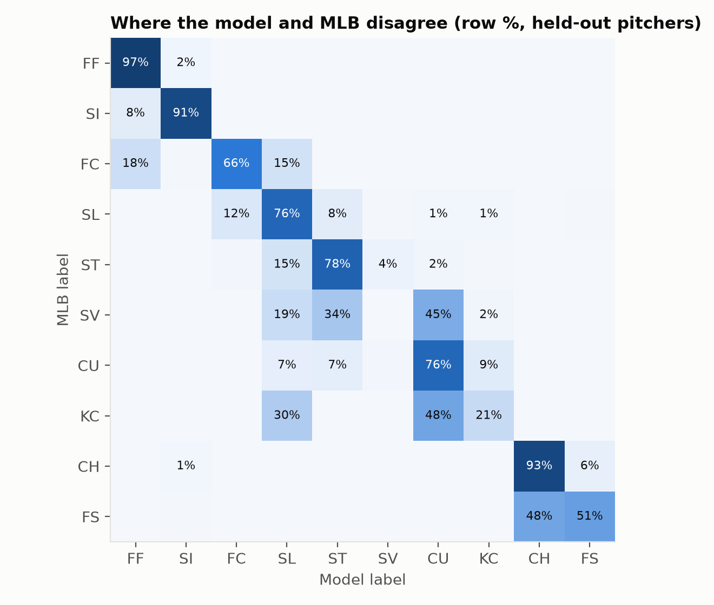
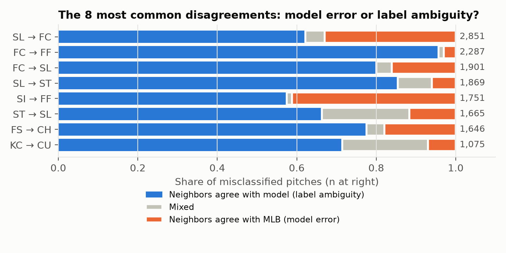

Can MLB's pitch labels be recovered for pitchers a model has never seen, and when the model disagrees, is the model wrong or the label?
The full 2025 MLB regular season from public Statcast: 712,528 pitches from all 2,430 games, verified against MLB's official schedule. 699,305 pitches from 723 pitchers remain after cleaning. The project rebuilds a 2021 class project with stricter validation.

Row-normalized confusion matrix for held-out pitchers (best model). Most confusion sits at naming boundaries: cutter/four-seam, slider/sweeper/cutter, splitter/changeup, knuckle curve/curveball.
| Model | Accuracy | Macro-F1 | Log loss |
|---|---|---|---|
| Logistic regression | 0.849 | 0.660 | 0.43 |
| Boosted trees, plan's fixed settings | 0.807 | 0.619 | 2.86 |
| Boosted trees, tuned on held-out pitchers (exploratory) | 0.840 | 0.649 | — |
Means over 5 repeats; each repeat holds out a different 20% of pitchers.

For each misclassified pitch: do most of its 50 nearest pitches from other pitchers carry MLB's label (model error) or the model's label (label ambiguity)?
Pitch labels are naming decisions, not physical categories. Models that use labels across pitchers (pitch-type splits, pitch-quality models) inherit that inconsistency. Pitcher-relative descriptions are safer.
MLB's labels are the target, not ground truth. The analysis covers one season and excludes pitchers with fewer than 100 pitches. The hardest-pitch reference assumes the fastest pitches are fastballs. Slurves and knuckle curves are rare classes.
Data: Baseball Savant / Statcast (MLB Advanced Media), public pitch-level data. An interactive arsenal explorer (Streamlit) is included in the repository.